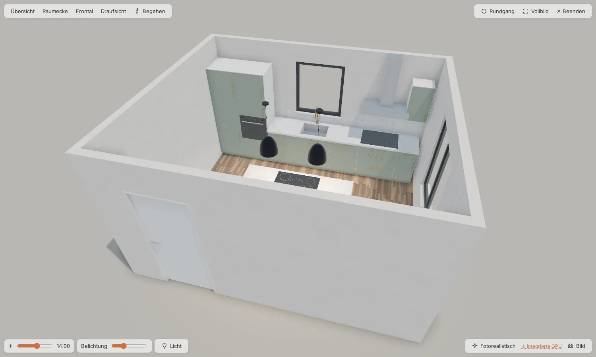
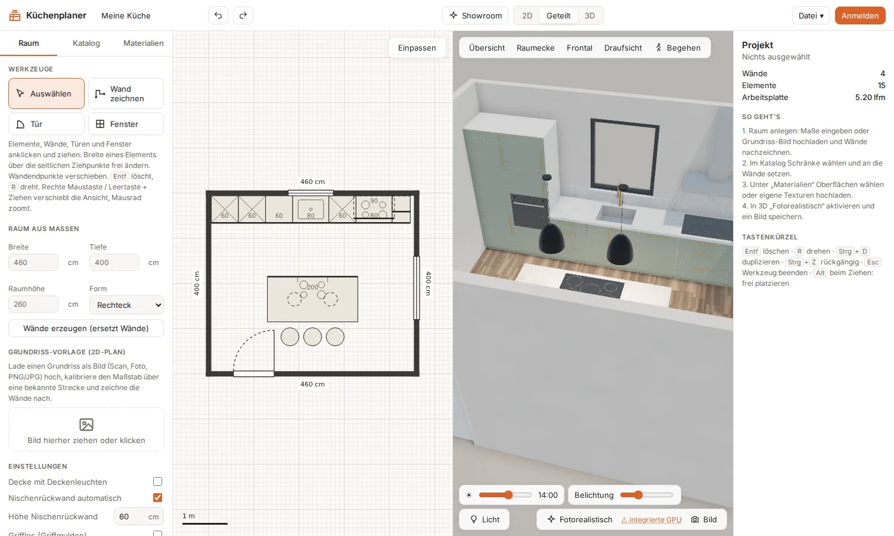
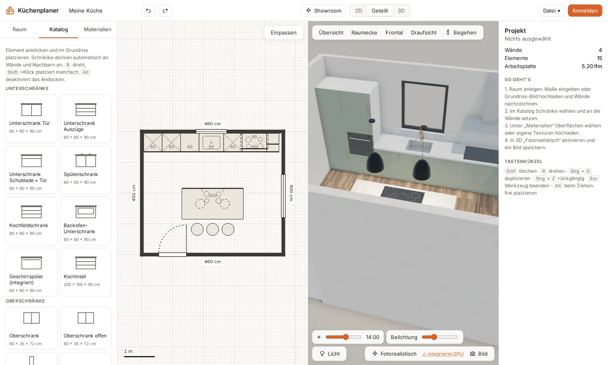
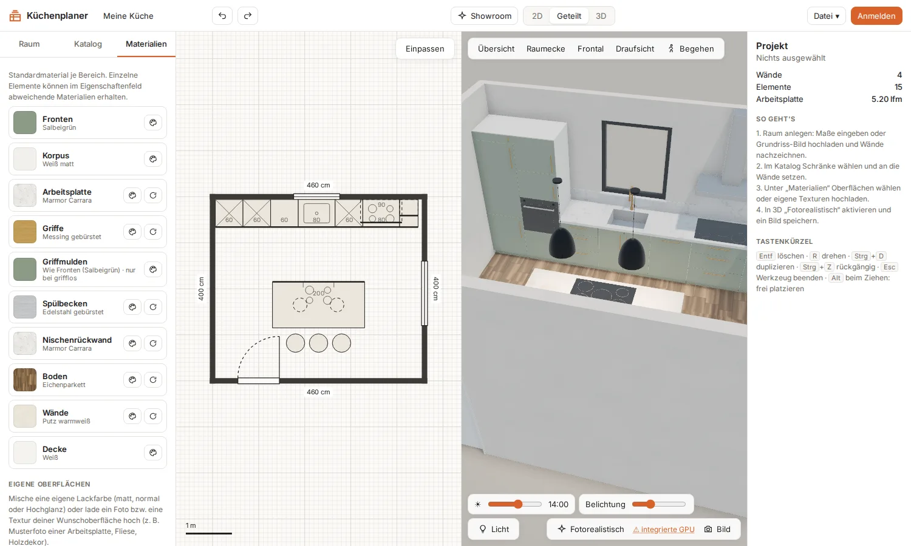
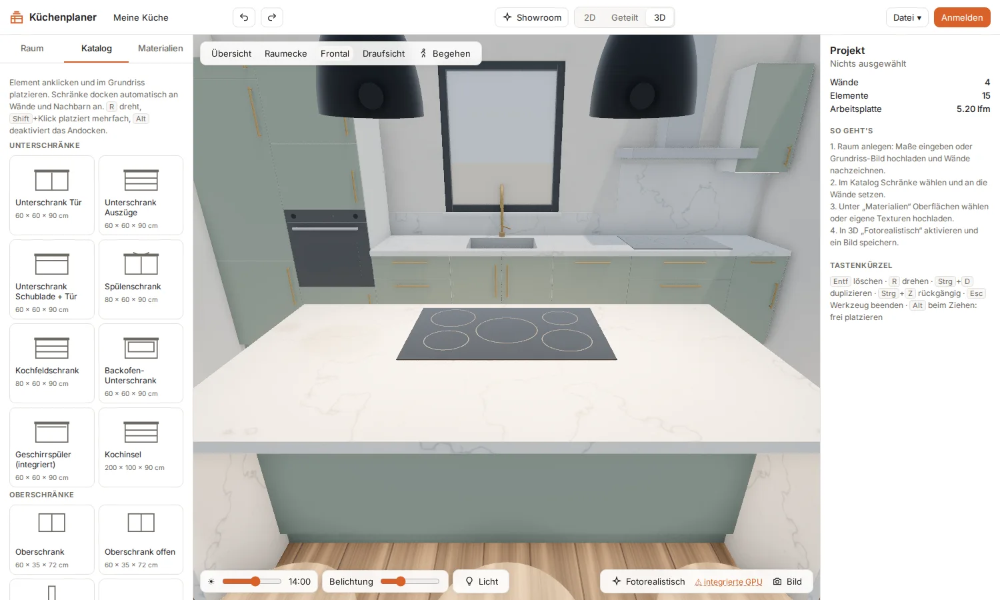

Vom Grundriss zur fotorealistischen Küche.
Wände zeichnen, Schränke andocken, Fronten und Arbeitsplatte wählen – und die Küche sofort in 3D sehen. Mit Pathtracing, Showroom und Links zum Teilen.

In vier Schritten zur Küche
Ohne Installation ausprobieren: Die Live-Demo startet mit einer fertigen Beispielküche.
2D und 3D gleichzeitig
In der geteilten Ansicht zeichnest du links den Grundriss, rechts wächst die Küche in 3D mit – jede Änderung sofort sichtbar.
- Wände mit Längeneingabe, Winkel- und Endpunktfang
- Grundriss-Scan als Vorlage mit Maßstab
- Raum aus Maßen: Rechteck oder L-Form

Ein Katalog, der mitdenkt
Unter-, Ober- und Hochschränke, Geräte und Kochinsel. Schränke docken an Wände und Nachbarn an, die Breite ziehst du frei.
- Fronten mit Türen, Klappen oder 1–4 Auszügen
- Grifflos mit Griffmulden, waagerecht oder senkrecht
- Kochinsel mit Theke, Überständen und Muldenlüfter

Materialien wie im Studio
Für jeden Bereich ein Standardmaterial, für einzelne Elemente Ausnahmen. Echte Scans, eigene Farben und eigene Fotos.
- Lacke, Holz, Stein, Keramik, Metall, Fliesen
- Online-Bibliotheken Poly Haven und ambientCG
- Textur ausrichten und Farbe anpassen

Sehen, wie es wird
Echtzeit-3D mit Schatten und Tageslicht – und auf Knopfdruck fotorealistisch per GPU-Pathtracing. Das Ergebnis speicherst du als Bild.
- Tageszeit, Sonne, Himmel und Lampen einstellbar
- Kamera-Presets und Begehen mit WASD
- Showroom mit Rundgang und Vollbild

Und außerdem
Was es braucht, um eine Planung zu speichern, zu zeigen und zu betreiben.
Konten
Planungen im Konto speichern, öffnen, kopieren. Das erste Konto wird Administrator.
Showroom-Link
Die Küche zum Ansehen teilen – ohne Anmeldung, nur lesend, jederzeit deaktivierbar.
Ohne Konto
Funktioniert auch ohne Anmeldung: Speichern im Browser, Export und Import als JSON.
Benutzerverwaltung
Registrierung ein/aus, Freigabepflicht für neue Konten, Konten sperren.
Docker
Ein Container mit Node 22, Express und SQLite – hinter jedem Reverse Proxy.
Open Source
AGPL-3.0: frei nutzbar und veränderbar, Änderungen bleiben offen.
Installation
Ein Node-Prozess, eine SQLite-Datei. Oder erst einmal die Live-Demo ausprobieren.
git clone https://github.com/mupf-dev/kitchen-planner-3d.git
cd kitchen-planner-3d
docker compose up -d --build
# → http://localhost:3010# benötigt Node.js ≥ 22.18
git clone https://github.com/mupf-dev/kitchen-planner-3d.git
cd kitchen-planner-3d
npm install
npm run build && npm start
# → http://localhost:3001npm install
npm run dev # Vite :5173 + API-Server :3001
npm run build # Typprüfung und Build nach dist/TRUST_PROXY=1 und COOKIE_SECURE=1 setzen. Daten liegen in DATA_DIR (Docker: /data).- Erstes KontoOben rechts „Anmelden“ → „Registrieren“. Das erste Konto wird Administrator.
- Registrierung steuernIn der Benutzerverwaltung Registrierung ein- oder ausschalten und neue Konten freigeben.
- GrafikkarteFür schnelles Pathtracing den Browser auf die dedizierte GPU stellen – der Planer zeigt, wie.
Anleitung
Die wichtigsten Schritte in Kürze.
1 · Raum anlegen
Reiter Raum: Maße eingeben und Wände erzeugen – oder Wände zeichnen, Türen und Fenster setzen.
2 · Grundriss nachzeichnen
Bild hochladen, mit Maßstab an einer bekannten Strecke kalibrieren und die Wände nachzeichnen.
3 · Schränke setzen
Reiter Katalog: Element anklicken, in den Grundriss klicken. R dreht, Alt platziert frei.
4 · Oberflächen wählen
Reiter Materialien: je Bereich ein Material, eigene Farbe oder Textur hochladen.
5 · Fotorealistisch
Oben auf 3D, dann Fotorealistisch. Das Bild verfeinert sich – mit Bild speichern.
6 · Teilen
Anmelden, Planung speichern und einen Showroom-Link erzeugen – oder als JSON exportieren.
Jetzt in der Live-Demo ausprobieren →
Die Live-Demo läuft auf einem privaten Server. Planungen ohne Anmeldung bleiben nur in deinem Browser.